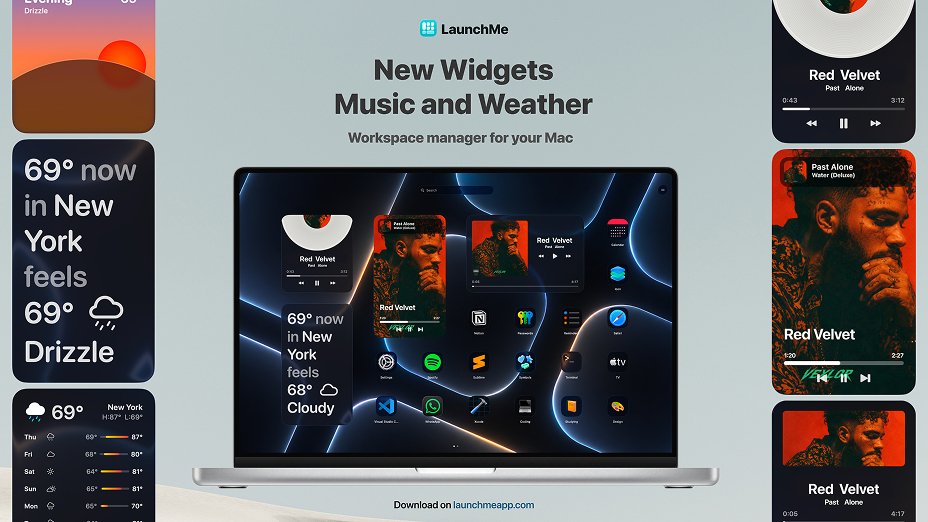
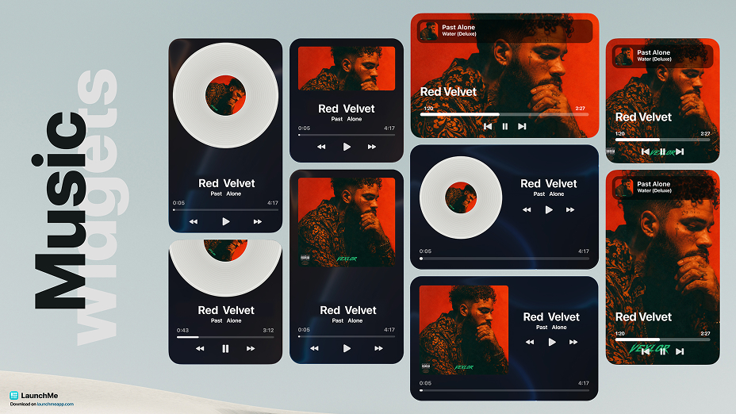
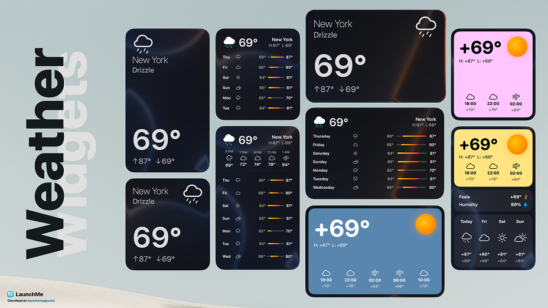
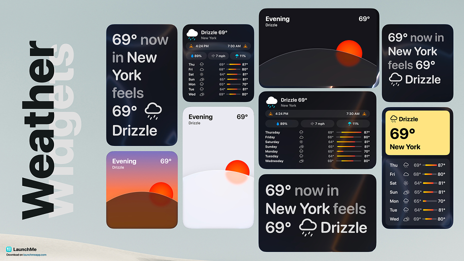
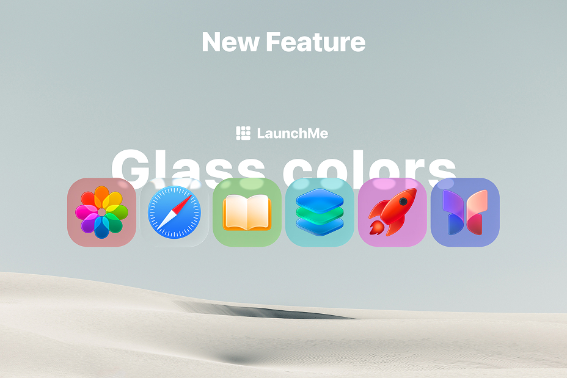

LaunchMe update.
New Widgets unpacking
What update 1.118 brings to LaunchMe users
Since update 1.111, LaunchMe has kept evolving, not only as a Mac app launcher, but as a fully customizable workspace you can open, search, and personalize the way you want. Versions 1.113 through 1.118 add new widgets, deeper Liquid Glass controls, smarter search, gesture invoke built into settings, and several quality-of-life improvements for power users with large app libraries.
If you use LaunchMe as a Launchpad replacement on macOS 26 Tahoe, or as your daily app launcher, these updates make the launcher faster, more flexible, and more visually polished, with several major features now available on Free accounts.

Music Widget - Minimal, Full Cover, and Vinyl
Music lovers get a dedicated Music Widget with three styles:
Minimal
Track title and controls in a clean, compact layout with unlimited background customization with custom images, Glass colors, Fluid Animation and Gradient.
Full Cover
Album art front and center with playback controls.
Vinyl
A spinning vinyl look for a classic, tactile feel with customizable background and option to change Vinyl style with any image.
Control Spotify and Apple Music playback, see what's playing, and style the widget to match your Space - whether you're in a focus Space with Minimal or a chill Space with Vinyl and Liquid Glass Tinted mode.
Example 1
You listen to music while working: add a Minimal Music Widget to your work Space - track name and play/pause always visible, without taking much grid space.
Example 2
You want your launcher to feel like a personal dashboard: place a Vinyl Music Widget on the main page with your favorite album spinning while you browse apps.

Weather Widget - 8 styles, 4 sizes, unlimited customization
The new Weather Widget brings live conditions right onto your LaunchMe grid. Choose from 8 visual styles and 4 widget sizes - from a compact glance to a large, detailed forecast panel.
Customize city, layout, colors, and style until the widget matches your Space or wallpaper. It works alongside Dynamic Weather wallpapers, but lives on the grid as a widget you can place anywhere - next to apps, in folders, or on a dedicated page.

Minimal
The most stripped-down look: temperature and essentials only. Best for a small widget tucked into a corner of your grid for minimalist setups.
Compact
A tight card with a weather icon (sun, cloud, etc.), city name and key details - more context than Minimal, without feeling crowded.
Forecast
Focused on the days ahead: a multi-day outlook in list form. Handy when you want a quick week-at-a-glance.
Panel
A modular layout with distinct blocks: temperature, conditions, forecast, and extra data in one larger widget with Sun and Moon icons changing based on time of day.
Almanac
The detail-oriented style - sunrise/sunset, phases, and additional metrics for users who want the full picture of the day.
Horizon
A scenic layout with minimalist styled curved horizon - sun moving by time of day and changes to the Moon at night. Background has 3 styles: Dynamic with day colors, Minimalistic Light and Dark.
Bold
High-contrast, colorful design with strong typography. Stands out on Liquid Glass backgrounds and custom wallpapers with customizable color of first block.
Story
Text-first format: weather summarized in short lines, like a mini daily report - not just digits and icons.

Liquid Glass with global Clear and Tinted modes
Now you can choose between system standard auto Dark and Light tint, Clear Glass style or Tinted with custom colors you can set yourself for all glass in interface and icons. This customization is set per Space and allows you to create workspaces with different style from glass color to wallpaper, widgets and layout.
Also from now, the Standard Liquid Glass Theme is available for Free users!
Invoke with Gesture - now integrated in LaunchMe
Invoke with Gesture is fully integrated into LaunchMe and you can enable it in Settings. Use 4-finger gestures to open and close LaunchMe from trackpad, alongside Hot Key and Hot Corners.
Rename apps - free customization for every icon
A long-requested feature is here: Rename apps is now a free feature for all LaunchMe users.
Give any app a custom display name on your grid - shorten long titles, use nicknames, or rename apps in your language. Renaming does not change the app on your Mac; it only changes how the app appears inside LaunchMe. Pair it with custom icons and folders for a grid that reads exactly the way you think.
Emoji & Symbols panel in the search bar
Finding the right emoji or symbol is faster with the new Emoji & Symbols panel built into the search bar.
Just start typing the name of the emoji you want to find in the Search bar, then a new Emoji button will appear on the right. You can click on it or use the TAB key to switch to Emoji Panel.
Show over fullscreen apps
When Show over fullscreen apps is enabled in settings, LaunchMe can appear on top of fullscreen apps on any desktop.
Invoke LaunchMe even if another app is in fullscreen - switch apps, launch a Workflow, or search files without exiting fullscreen first. Useful for developers, designers, and anyone who lives in fullscreen but still wants instant access to their launcher.
New languages
LaunchMe now supports five additional languages:
- Vietnamese
- Indonesian
- Ukrainian
- Filipino
- Polish
The app UI, settings, and key labels adapt to your system or in-app language choice, making LaunchMe easier to use for more Mac users worldwide.
Performance and reliability (300-500+ apps)
For users with large app libraries, updates 1.118 include meaningful under-the-hood work:
- Redesigned app indexing - faster launch and smoother scrolling when you have 300-500 apps (or more)
- Improved cache system - better auto cache cleaning and management
- Unhide app button - hidden apps can be unhidden again from settings
If LaunchMe felt heavy with a huge grid before, this release cycle is worth updating for.
New features and fixes summary
- Music Widget: Minimal, Full Cover, Vinyl
- Weather Widget: 8 styles, 4 sizes, unlimited customization
- Liquid Glass theme for Free accounts
- Global Liquid Glass: Clear mode, Tinted mode with custom colors
- Invoke with Gesture in Settings
- Rename apps (free)
- Emoji & Symbols panel in search bar
- New languages: Vietnamese, Indonesian, Ukrainian, Filipino, Polish
- Disable button for Hot Key
- Show over fullscreen apps
Fixes:
- Added missing Unhide app button
- Improved performance with 300-500 apps (redesigned indexing)
- Improved cache system
- Fixed Hot Key issue
- Fixed registration UX
Why LaunchMe
LaunchMe remains more than a Launchpad replacement. With Music and Weather widgets, Liquid Glass for Free users, Rename apps, gesture invoke in Settings, and the option to show over fullscreen apps, LaunchMe keeps pushing toward a launcher that is fast to open, beautiful to look at, and deep enough for real daily workflows on macOS 26 Tahoe and macOS 27 Golden Gate.